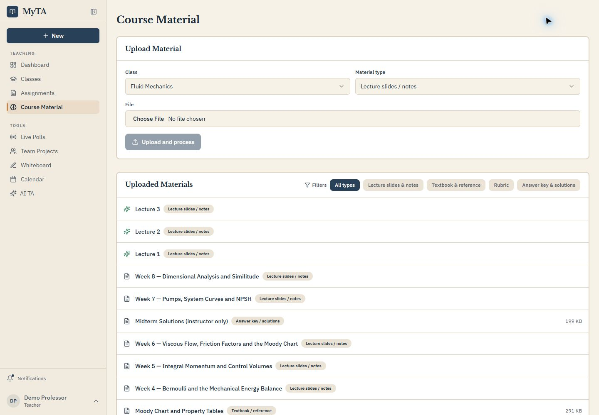

01
Ground support in the course
Upload the notes, references, rubrics, and solutions that shape how students are expected to work.
ONE CONNECTED COURSE WORKFLOW
MyTA brings course materials, guided assignment support, and instructor attention into one connected workflow.

ONE CONNECTED COURSE WORKFLOW
MyTA brings course materials, guided assignment support, and instructor attention into one connected workflow.
01
Upload the notes, references, rubrics, and solutions that shape how students are expected to work.
02
Students can ask for hints, explanations, and reasoning checks without leaving the assignment.

03
Weekly briefings and assignment queues help instructors decide what to review, grade, or revisit.